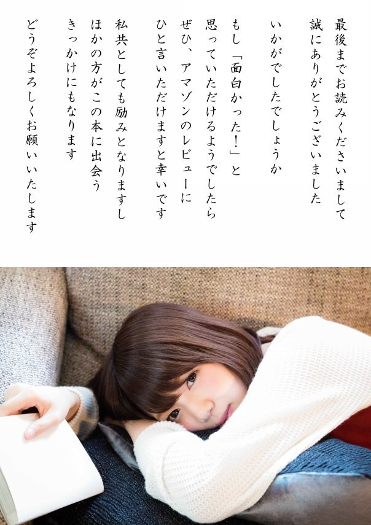

| 〈現代語化〉シナ人の食人肉風習: 中国におけるカニバリズムの歴史 (現代語化文庫) | |
| 桑原隲蔵 | |
| Nakamura Shuppan (2017) | |
シナ人の食人肉風習
桑原隲蔵 著
この四月二十七、八日の諸新聞に、
目下露国〔ロシア〕の首都ペトログラードの食糧窮乏を極めたる折柄 、官憲にてシナ人が人肉を市場に販売しつつありし事実を発見し、該シナ人を取り押さえて、遂にこれを銃殺せり。
という驚くべき外国電報が掲載されてある。私はこの電報によって、端 なくも、古来シナ人間に行わるる、人肉食用の風習を憶 い起こさざるを得ないのである。
一体シナ人の間に、上古から食人肉の風習の存 したことは、経史 に歴然たる確証があって、毫 も疑惑の余地がない。古いところでは殷 の紂王 が、自分の不行跡を諌 めた翼侯 を炙 とし、鬼侯 を腊 にし、梅伯 を醢 にしている。「炙」は人肉を炙 ること、「腊」は人肉を乾 すこと、「醢」とは人肉を醤漬 にすることで、いずれも人肉を食することを前提とした調理法に過ぎぬ。降って春秋 時代になると、有名な斉 の桓公 、晋 の文公 、いずれも人肉を食している。斉の桓公は、その嬖臣 易牙 の調理して進めた、彼の子供の肉を食膳に上せて舌鼓 を打ち、晋の文公は、その天下放浪中、食に窮した折柄 、従臣介之推 の股肉 を啖 って饑 えを凌 いだ。漢楚 交争時代に、楚 の項羽 は漢の高祖の父太公を擒 にし、これを俎上 に置いて高祖を威嚇した。高祖はこれに対して、「幸分 二 我一杯羹 一 」〔幸 いに我 に一杯の羹 を分かて〕と対 えている。これらの応対は、食人肉の風習の存在を承認せずしては、十分に理会できぬことと思う。
シナ人の人肉を食するのは、決して稀有 偶然の出来事でない。歴代の正史の随処 に、その証拠を発見することができる。中に就 いてもっとも著 しい二三の実例を示そう。第一の例としては隋 末の劇賊朱粲 を挙げねばならぬ。彼は人肉を以て食の最美なるものと称し、部下に命じ、至る所婦人小児 を略 して、軍の糧食に供 せしめている。唐 末の賊首黄巣 の軍もまた同様である。黄巣の軍は長安没落後、糧食に乏 しく、毎日沿道の百姓数千人を捕 え、生きながらこれを臼 に納 れ、杵砕 して食に充 てた。この時討手 に向かった官軍は、賊軍を討伐するよりも、彼らの糧乏 しきに乗じ、無辜 の良民を捕え、これを賊軍に売り付けて金儲 けをしたという。随分呆 れた話であるが、シナ兵の所行 としては、あり得ることかも知れぬ。朱粲や黄巣の事蹟は、いずれも『旧唐書』に見えている。また『五代史記』によると、五代の初めに、揚州地方は連年の騒乱のため、倉廩 空虚となった結果、人肉の需要が盛んに起こり、貧民の間では、夫はその婦を、父はその子を肉屋に売り渡し、肉屋の主人は彼らの目前でこれを料理いたし、羊豚と同様に、店前で人肉を売り出したという。
さらに南宋 の初期には、金 人の入寇 により、山東 ・京西・淮南 の諸路一帯にかけて、穀価暴騰せしため、この方面の人々は、百姓も兵卒も盗賊も、皆人肉を食して口腹を充たした。当時人間を「両脚羊 」と称した。人肉を羊肉と同一視したわけである。南宋の荘綽 の『鶏肋 編』に、忠実に当時の惨状を述記している。これにも勝るいっそうの惨事が、元 末擾乱 の際に実現した。その光景は、当時の陶宗儀 の『輟耕録 』に委細に描出されている。
実例の紹介は右に止 めて、シナ人の人肉を食用する動機を考察すると、大約 これを左 の五種に区別することができると思う。
（第一） 饑餓 より来る要求で、もちろんこれが一番普通である。シナでは凶年の場合に、いわゆる「人相食」〔人相 食う〕と申して、もっとも露骨に弱肉強食のありさまを現出する。かかる場合にも、民間ではその子を易 えて、甲は乙の子を、乙は甲の子を食して、一時の露命 を繋 ぎ、または公然人肉を市場で販売するという事実がすこぶる多い。シナでは凶年に人肉を食料に充てるのが、ほとんど慣例となっている。
（第二） 凶年でなくとも、戦争の際重囲 の裡 に陥 って、糧食尽 くる時は、シナ人は人肉を以て糧食に代用することが、ほとんど一種の慣例と申して差支 えない。唐の張巡 ・許遠 らが、賊軍のために睢陽 に囲まれて糧道絶 ゆるや、張巡は真っ先にその愛妾 を殺し、許遠はその従僕を殺して士卒の食に充て、続きて城中の婦人を、最後に戦闘に堪え得ざる老弱 の男子を糧食に供したことは、有名なる話であるが、かかる事実はシナではむしろ普通の出来事かと思う。蒙古 の太宗 〔オゴデイ・ハーン〕が金 の都の汴京 を囲んだ時、城中食尽きて人々相呑噬 して、一日の生を偸 んだ惨憺たる光景は、当時の籠城者の一人なる劉祁 の記録によって、七百年後の今日でも、その髣髴 を想見することができる。明 末の流賊李自成 のために、長い攻囲を受けて、糧食に尽きた開封 の城民は、父は子を食い、夫は妻を食い、兄は弟を食うという、戦慄 すべき餓鬼道 に陥ったありさまは、当時の籠城 者の一人なる李光壂 の日誌に備載されている。
（第三） 嗜好 のために人肉を食用することで、この例はあまり多くない。五代時代の高灃 や萇従簡 は、相当高位大官の身分なるにかかわらず、人肉を好み、あるいは行人を掠 め、あるいは小児を捕えて食料に供したという。唐代の薛震 や独孤荘 なども、人肉嗜好者として後世に知られている。その他にも若干の人肉嗜好者を列挙することができる。
（第四） 憎悪 の極 その人の肉を食うことである。シナ人はその怨敵 に対する時、よく「欲 レ 噬 二 其肉 一 」〔その肉を噬 わんと欲す〕という文字を使用するが、これは決して誇張 せる形容でなく、率直なる事実である。シナ人は死後も肉体の保存を必要と信じ、その肉を食えば、これによって死者に多大の苦痛を与え得るものと信じている。梁 の武帝を餓死せしめた反将の侯景 が、後に殺害されて市に曝 された時、彼を悪 める士民は争うてその肉を食い尽くした。唐の楊貴妃 の族兄楊国忠 が、貴妃とともに馬嵬 で殺害された時も、これと同様に、彼の肉は軍民の餌食 となつた。元 の世祖〔フビライ・ハーン〕の権臣阿合馬 〔アフマド・ファナーカティー〕のごとき、明 の宦官 劉瑾 のごとき、その失脚して殺戮に遇った時、かねて彼らを憎める人々は、その肉を買い取って、これを生食 したという。
（第五） 疾病 治療の目的のために、人肉を食することである。唐の玄宗 時代に陳蔵器 が、その著『本草拾遺 』中に薬材として人肉を加えて以来、シナ歴代の本草は、いずれも人肉を薬材として取扱う。人肉を薬材として食用することは、唐以前にほとんど稀 で、唐以後に限る。全く陳蔵器が俑 を作したものといわねばならぬ。かくて宋・元 以来、父母や舅姑 の病気の場合、その子たり又はその嫁たる者が、自己の肉を割 き、薬餌 としてこれを進めることが、ほとんど一種の流行となった。政府もまたかかる行為を孝行として奨励を加える。元時代にはかかる場合に、人毎 に絹五疋 、羊両頭、田一頃 を賞賜 して旌表 したという。
雷同性に富み、利欲心の深いシナ人は、この政府の奨励に煽 られて、いっそう盛んに人肉を使用することとなり、弊害底止 するところを知らざるありさまとなった。明 の太祖はこの弊風を矯正 する目的で、洪武 二十七年（西暦一三九四）に詔勅を発して、今後股 を割き孝を行う者に対して、一切旌表を禁止している。されどこれも一時のことと見え、明 ・清 時代を通じて、自己の股肉を割いて父母に進むることは、最上の孝行として社会に歓迎せられ、政府もまた多くの場合これに旌表を加えた。民国以後のシナの新聞にも、時々かかる行為が特別に紹介されている。
シナ人の食人肉風習は、シナ歴代の史料に記載されてあるのみでなく、同時に外国の観光者によって保証されている。唐末五代にかけてシナに渡航した、マホメット教徒の記録を見ても、その当時のシナ人は人肉を食用し、その市場において公然人肉を販売し、しかも官憲はこれについて何らの取締 をなさざりしことが明白である。この古きマホメット教徒の記録を仏訳して、これを世間に紹介したフランスの東洋学者レイノー（Reinaud）は、この記事に疑惑を挟みて、当時シナは擾乱を極めた時代であるから、あるいは一時的現象として、かかる事実存在せしや知れざれど、おそらくこれはマホメット教徒の訛伝 で、事実でなかろうと申している。しかしこれはレイノーがシナの実情に通達せざるゆえで、マホメット教徒の記事に何らの訛伝がない。元時代ないし明・清時代にシナに観光した、もしくはシナに滞在した外国人の記録の中にも、シナ人の食人肉風習を伝うるものが少なくない。
古代に溯 って稽 えると、食人肉の風習は、随分世界に広く行われたらしい。されどシナのごとき、世界最古の文明国の一で、しかも幾千年間引き続いて、この蛮風の持続した国はあまり見当たらぬ。南洋諸島の間には、比較的近代まで、食人肉の風が盛んに行われておった。北方民族の間にも、かつて食人肉の風が行われておった。シナにおけるこの蛮風は、外国伝来のものであるか、もしくはその国固有のものであるかは、もちろん容易に決定することができぬ。ただ極めて悠遠なる時代から、シナにこの蛮風の存在したことは、記録によって疑いを容 るべき余地がない。
日支両国は唇歯 相倚 る間柄 で、もちろん親善でなければならぬ。日支の親善を図るには、まず日本人がよくシナ人を理会せなければならぬ。シナ人をよく理会するためには、表裏二面より彼らを観察する必要がある。経伝詩文によって、シナ人の長所美点を会得 するのももちろん必要であるが、同時にその反対の方面をも、一応心得置くべきことと思う。食人肉風習の存在は、シナ人にとってはあまり名誉のことではない。されど儼然 たる事実は、到底これを掩蔽 することを許さぬ。シナ人の一面に、かかる風習の存在せしことを承知し置くのもまた、シナ人を理会するに無用であるまいと思う。シナ人間 における食人肉風習の存在は、決して新しい問題ではない。すでに十数年前からDer Kannibalismus der Chinesen〔シナ人のカニバリズム〕という問題は、多少欧州学者の注意を惹いている。ただ彼らは文献上から、十分にこの風習の存在を証明できなかったため、今日に至るまで、未だこの問題に関する徹底した論文が、発表されておらぬようである。
私も最近二、三年間、この問題の調査に手を著 け、多少得るところがあった。その調査の結果全体は、遠からず学界に発表いたすこととして、今はとりあえずシナ人の人肉発売という外国電報に促 されて、古来シナにおける食人肉風習の存在せる事実の一端をここに紹介することにした。
（大正八年四月二十七日）

現代語化 中村匡志
(c) 2017 Tadashi Nakamura. All rights reserved.
本書は、日本国の著作権法令（特に著作権法第二条第一項第十一号）並びに著作権に関する国際条約及びその締約国著作権法令等により保護されています。無断複製及び無断転載を禁じます。
【現代語化文庫について】
明治時代から昭和前期にかけて綺羅星 のごとく陸続 と上梓 された不朽 の名著群は、我々日本国民が共有する貴重な文化遺産として、現代に甦 らせて我々自身がしっかりと活用するとともに、後世の子々孫々にもきちんと継承していかなければならないものです。そのためには、まず、これらの名著の古風 な表記を、現代の日本人が読みやすく親しみやすい表記にあらためる必要があります。現代語化文庫では、この使命を果たすべく、原著における旧字 旧仮名 を新字 新仮名 に直し、送り仮名 をあらため、漢字を仮名書 きにし、句読法 をあらため、ルビを増やす等の方法により、一冊一冊叮嚀 に現代語化を行い、新たな息吹 を吹き込んでいます。